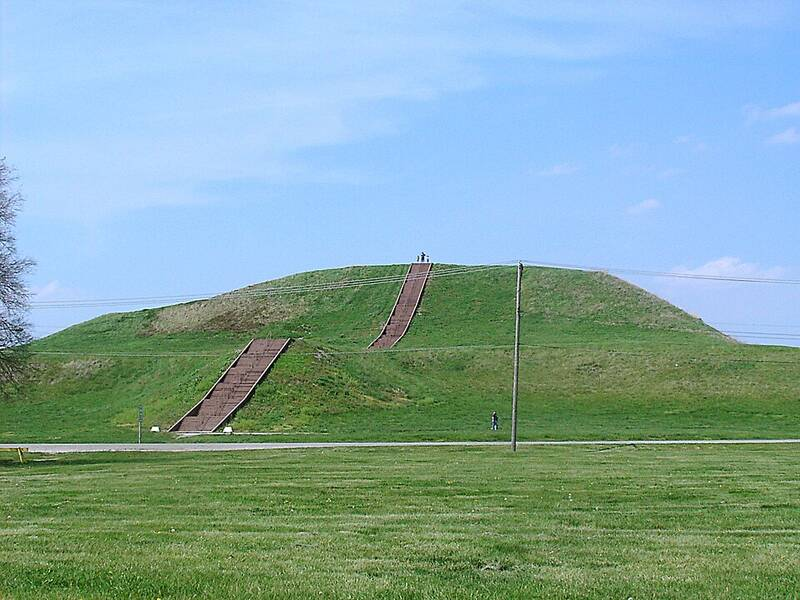

Cahokia's Monks Mound
Collinsville, Illinois, about AD 900 to 1200

The largest earthen pyramid in North America, built by the Mississippian culture at a city that was once larger than London at the time. 1
Open in the interactive Watcher
Sources
- Cahokia Wikipedia